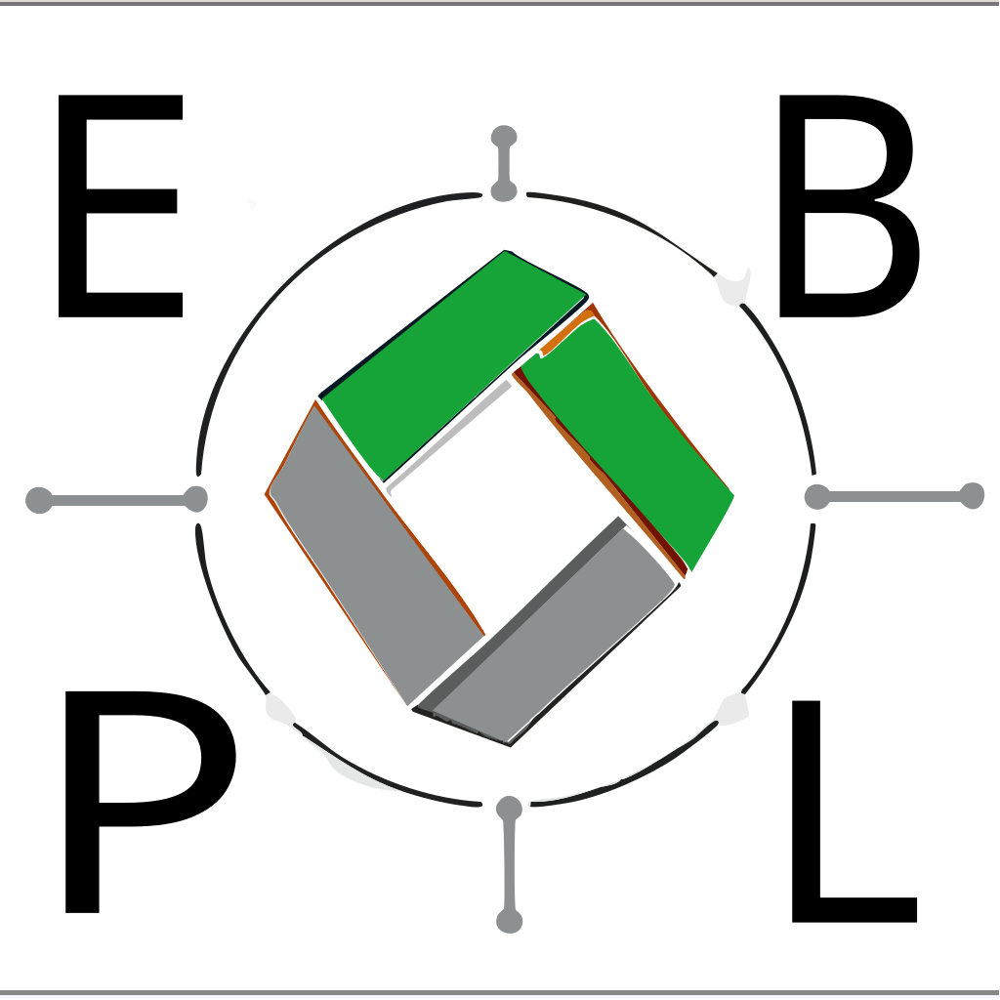

Unternehmen werden bei der rechtskonformen und digitalen Erfassung von Abfalldaten (EDM) unterstützt – von der Registrierung über das Prozessdesign bis hin zur Integration in die behördliche Schnittstelle. Darüber hinaus erfolgt eine fachliche Beratung in den Bereichen Aufbereitung, Verfüllung, Deponierung und Abbruchleistungen.
Kostenlose Erstberatung anfragenIdeal für Abfallsammler, Behandler und größere Erzeuger.
Prüfung bestehender Aufzeichnungen, Gap-Analyse zur EDM-Konformität, Audit-Readiness.
Wir finden für Sie die passenden Partner für Abbruch und Entsorgung – kompetent, regional und zuverlässig organisiert.
EDM (Elektronisches Datenmanagement) ermöglicht zentrale, rechtskonforme Erfassung, Übermittlung und Speicherung von umweltbezogenen Daten. Wir unterstützen:
Schreibe uns kurz, welche Herausforderung du hast — wir melden uns mit einer Einschätzung und Terminvorschlag.